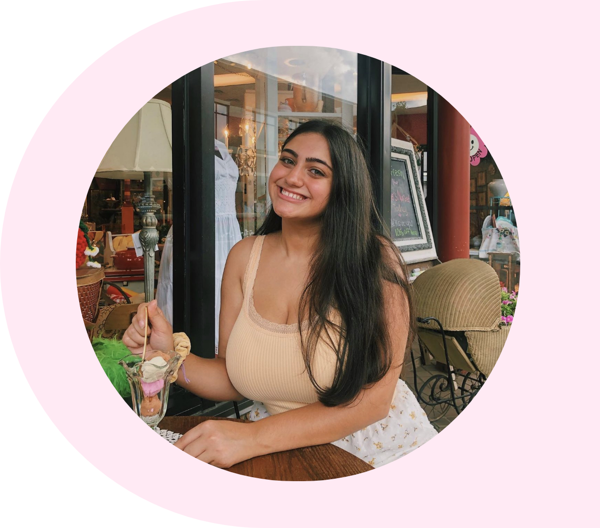
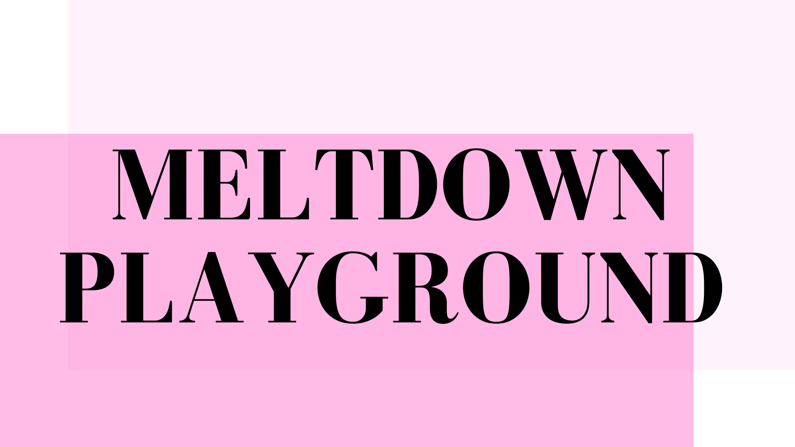
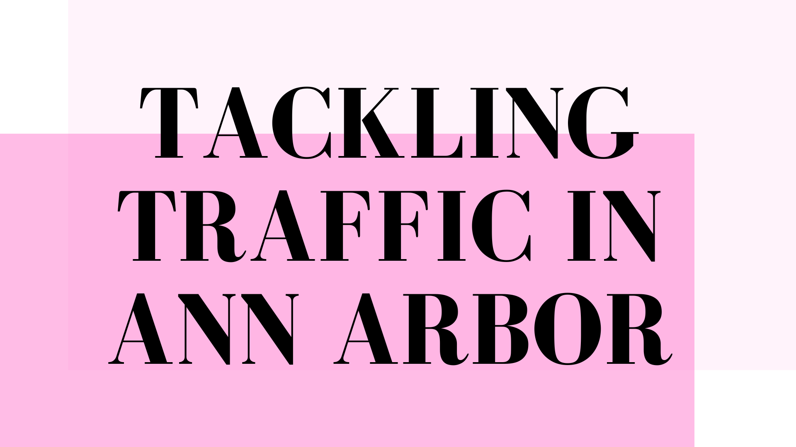
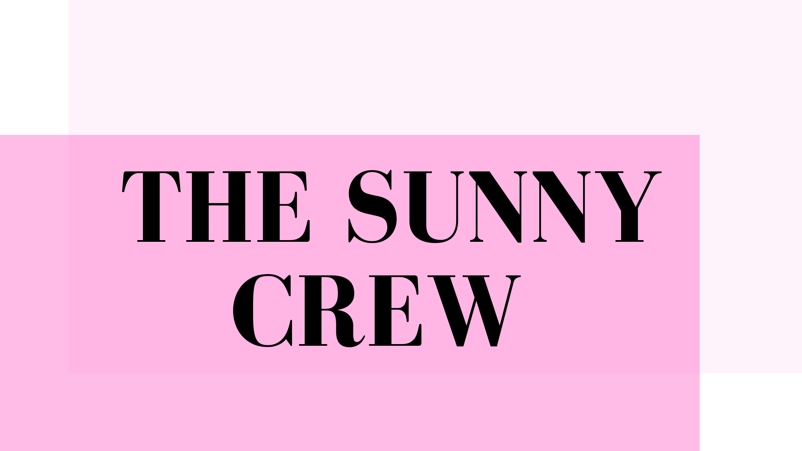

୨୧ · · ♡ · · ୨୧

Lynn Sabieddine loves
all things art.
As a third year Art and Design student at the University of Michigan, I hope to explore my passion for creativity and design within my UX case studies, art projects, written works, and other interests.
Recent Works
୨୧ · · ♡ · · ୨୧

View More
Meltdown Playground
Figma Prototype for ARTDES 345 - Interaction Design

View More
Tackling Traffic in Ann Arbor
Semester long UX Research for SI 422 - Needs Assessment and Usability Evaluation

View More
Anime Data-Oriented Programming
Python APIs, SQL, and Visualizations for SI 206 - Data-Oriented Programming